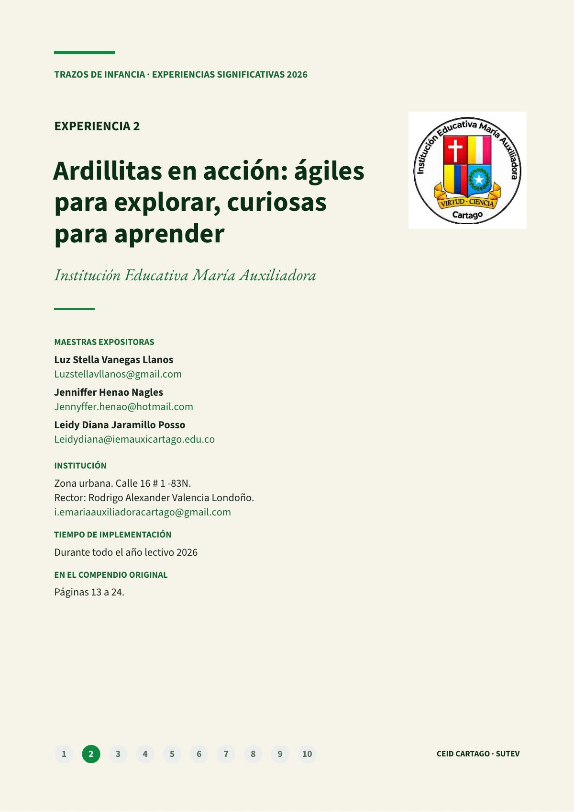
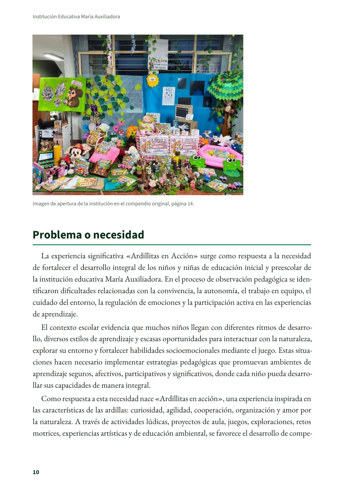
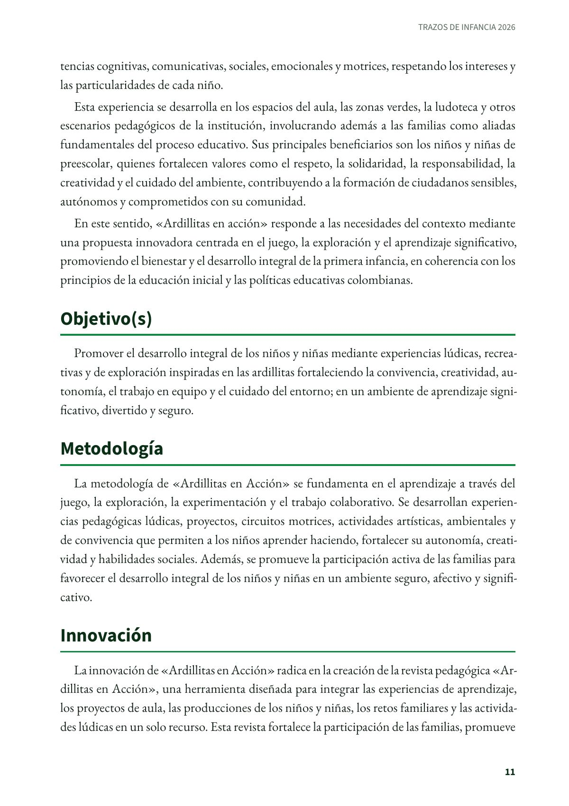
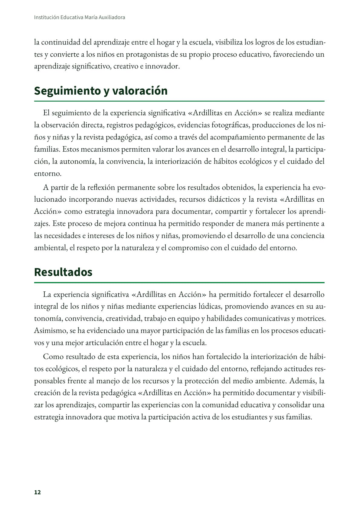
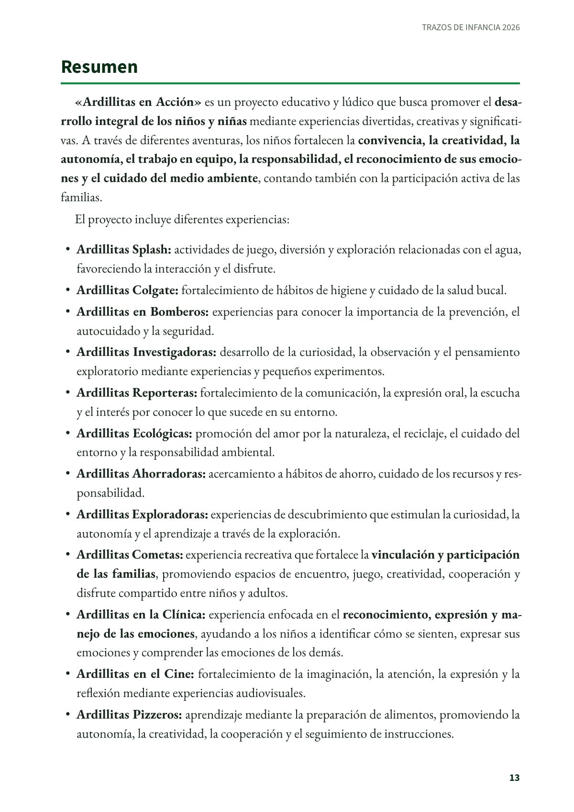
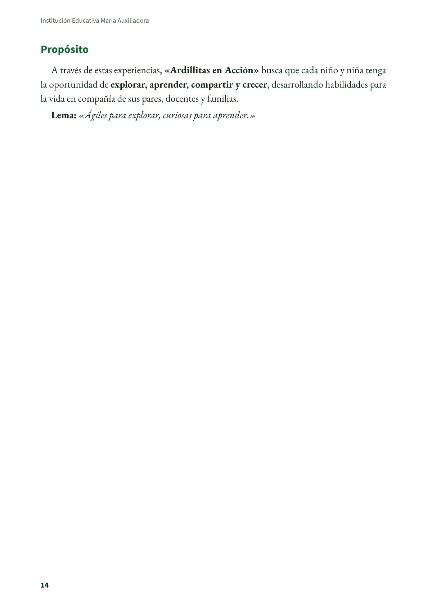
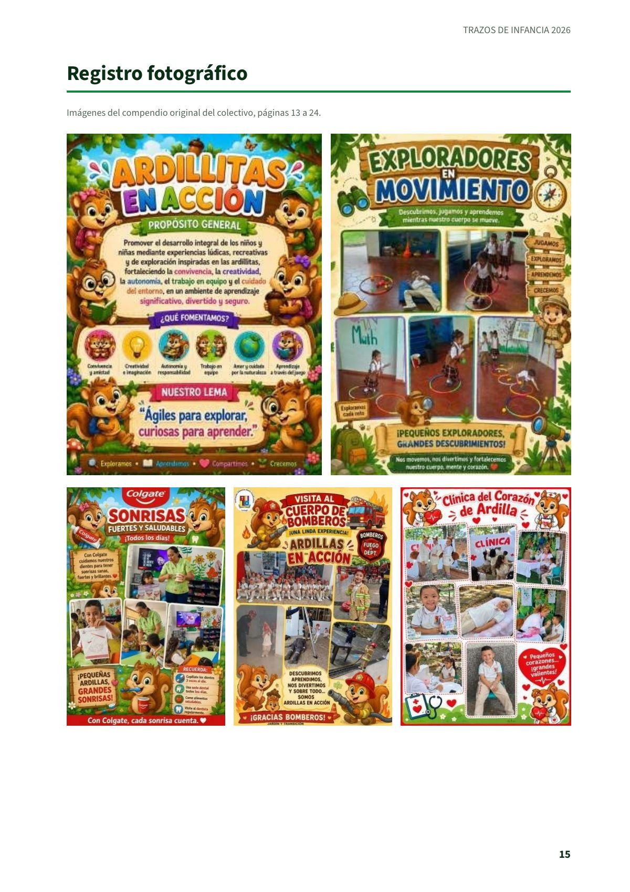
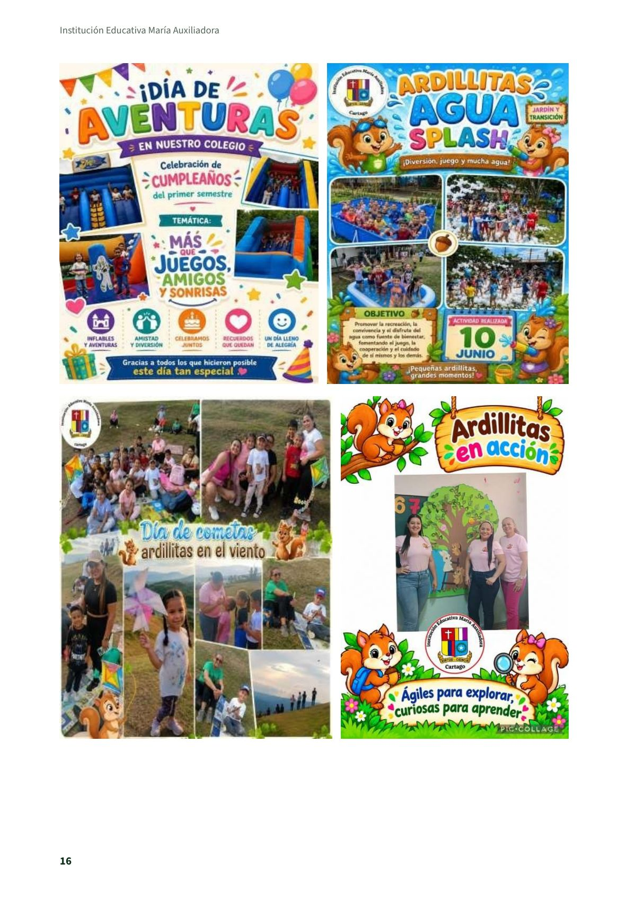

Ardillitas en acción: ágiles para explorar, curiosas para aprender
Experiencia significativa en educación inicial de la Institución Educativa María Auxiliadora, de Cartago, tal como la presentaron sus maestras en el compendio del colectivo Trazos de Infancia.
PDF · 8 págs. · 735 KBProblema o necesidad
La experiencia significativa «Ardillitas en Acción» surge como respuesta a la necesidad de fortalecer el desarrollo integral de los niños y niñas de educación inicial y preescolar de la institución educativa María Auxiliadora. En el proceso de observación pedagógica se identificaron dificultades relacionadas con la convivencia, la autonomía, el trabajo en equipo, el cuidado del entorno, la regulación de emociones y la participación activa en las experiencias de aprendizaje.
El contexto escolar evidencia que muchos niños llegan con diferentes ritmos de desarrollo, diversos estilos de aprendizaje y escasas oportunidades para interactuar con la naturaleza, explorar su entorno y fortalecer habilidades socioemocionales mediante el juego. Estas situaciones hacen necesario implementar estrategias pedagógicas que promuevan ambientes de aprendizaje seguros, afectivos, participativos y significativos, donde cada niño pueda desarrollar sus capacidades de manera integral.
Como respuesta a esta necesidad nace «Ardillitas en acción», una experiencia inspirada en las características de las ardillas: curiosidad, agilidad, cooperación, organización y amor por la naturaleza. A través de actividades lúdicas, proyectos de aula, juegos, exploraciones, retos motrices, experiencias artísticas y de educación ambiental, se favorece el desarrollo de competencias cognitivas, comunicativas, sociales, emocionales y motrices, respetando los intereses y las particularidades de cada niño.
Esta experiencia se desarrolla en los espacios del aula, las zonas verdes, la ludoteca y otros escenarios pedagógicos de la institución, involucrando además a las familias como aliadas fundamentales del proceso educativo. Sus principales beneficiarios son los niños y niñas de preescolar, quienes fortalecen valores como el respeto, la solidaridad, la responsabilidad, la creatividad y el cuidado del ambiente, contribuyendo a la formación de ciudadanos sensibles, autónomos y comprometidos con su comunidad.
En este sentido, «Ardillitas en acción» responde a las necesidades del contexto mediante una propuesta innovadora centrada en el juego, la exploración y el aprendizaje significativo, promoviendo el bienestar y el desarrollo integral de la primera infancia, en coherencia con los principios de la educación inicial y las políticas educativas colombianas.
Objetivo(s)
Promover el desarrollo integral de los niños y niñas mediante experiencias lúdicas, recreativas y de exploración inspiradas en las ardillitas fortaleciendo la convivencia, creatividad, autonomía, el trabajo en equipo y el cuidado del entorno; en un ambiente de aprendizaje significativo, divertido y seguro.
Metodología
La metodología de «Ardillitas en Acción» se fundamenta en el aprendizaje a través del juego, la exploración, la experimentación y el trabajo colaborativo. Se desarrollan experiencias pedagógicas lúdicas, proyectos, circuitos motrices, actividades artísticas, ambientales y de convivencia que permiten a los niños aprender haciendo, fortalecer su autonomía, creatividad y habilidades sociales. Además, se promueve la participación activa de las familias para favorecer el desarrollo integral de los niños y niñas en un ambiente seguro, afectivo y significativo.
Innovación
La innovación de «Ardillitas en Acción» radica en la creación de la revista pedagógica «Ardillitas en Acción», una herramienta diseñada para integrar las experiencias de aprendizaje, los proyectos de aula, las producciones de los niños y niñas, los retos familiares y las actividades lúdicas en un solo recurso. Esta revista fortalece la participación de las familias, promueve la continuidad del aprendizaje entre el hogar y la escuela, visibiliza los logros de los estudiantes y convierte a los niños en protagonistas de su propio proceso educativo, favoreciendo un aprendizaje significativo, creativo e innovador.
Seguimiento y valoración
El seguimiento de la experiencia significativa «Ardillitas en Acción» se realiza mediante la observación directa, registros pedagógicos, evidencias fotográficas, producciones de los niños y niñas y la revista pedagógica, así como a través del acompañamiento permanente de las familias. Estos mecanismos permiten valorar los avances en el desarrollo integral, la participación, la autonomía, la convivencia, la interiorización de hábitos ecológicos y el cuidado del entorno.
A partir de la reflexión permanente sobre los resultados obtenidos, la experiencia ha evolucionado incorporando nuevas actividades, recursos didácticos y la revista «Ardillitas en Acción» como estrategia innovadora para documentar, compartir y fortalecer los aprendizajes. Este proceso de mejora continua ha permitido responder de manera más pertinente a las necesidades e intereses de los niños y niñas, promoviendo el desarrollo de una conciencia ambiental, el respeto por la naturaleza y el compromiso con el cuidado del entorno.
Resultados
La experiencia significativa «Ardillitas en Acción» ha permitido fortalecer el desarrollo integral de los niños y niñas mediante experiencias lúdicas, promoviendo avances en su autonomía, convivencia, creatividad, trabajo en equipo y habilidades comunicativas y motrices. Asimismo, se ha evidenciado una mayor participación de las familias en los procesos educativos y una mejor articulación entre el hogar y la escuela.
Como resultado de esta experiencia, los niños han fortalecido la interiorización de hábitos ecológicos, el respeto por la naturaleza y el cuidado del entorno, reflejando actitudes responsables frente al manejo de los recursos y la protección del medio ambiente. Además, la creación de la revista pedagógica «Ardillitas en Acción» ha permitido documentar y visibilizar los aprendizajes, compartir las experiencias con la comunidad educativa y consolidar una estrategia innovadora que motiva la participación activa de los estudiantes y sus familias.
Resumen
«Ardillitas en Acción» es un proyecto educativo y lúdico que busca promover el desarrollo integral de los niños y niñas mediante experiencias divertidas, creativas y significativas. A través de diferentes aventuras, los niños fortalecen la convivencia, la creatividad, la autonomía, el trabajo en equipo, la responsabilidad, el reconocimiento de sus emociones y el cuidado del medio ambiente, contando también con la participación activa de las familias.
El proyecto incluye diferentes experiencias:
- Ardillitas Splash: actividades de juego, diversión y exploración relacionadas con el agua, favoreciendo la interacción y el disfrute.
- Ardillitas Colgate: fortalecimiento de hábitos de higiene y cuidado de la salud bucal.
- Ardillitas en Bomberos: experiencias para conocer la importancia de la prevención, el autocuidado y la seguridad.
- Ardillitas Investigadoras: desarrollo de la curiosidad, la observación y el pensamiento exploratorio mediante experiencias y pequeños experimentos.
- Ardillitas Reporteras: fortalecimiento de la comunicación, la expresión oral, la escucha y el interés por conocer lo que sucede en su entorno.
- Ardillitas Ecológicas: promoción del amor por la naturaleza, el reciclaje, el cuidado del entorno y la responsabilidad ambiental.
- Ardillitas Ahorradoras: acercamiento a hábitos de ahorro, cuidado de los recursos y responsabilidad.
- Ardillitas Exploradoras: experiencias de descubrimiento que estimulan la curiosidad, la autonomía y el aprendizaje a través de la exploración.
- Ardillitas Cometas: experiencia recreativa que fortalece la vinculación y participación de las familias, promoviendo espacios de encuentro, juego, creatividad, cooperación y disfrute compartido entre niños y adultos.
- Ardillitas en la Clínica: experiencia enfocada en el reconocimiento, expresión y manejo de las emociones, ayudando a los niños a identificar cómo se sienten, expresar sus emociones y comprender las emociones de los demás.
- Ardillitas en el Cine: fortalecimiento de la imaginación, la atención, la expresión y la reflexión mediante experiencias audiovisuales.
- Ardillitas Pizzeros: aprendizaje mediante la preparación de alimentos, promoviendo la autonomía, la creatividad, la cooperación y el seguimiento de instrucciones.
Propósito
A través de estas experiencias, «Ardillitas en Acción» busca que cada niño y niña tenga la oportunidad de explorar, aprender, compartir y crecer, desarrollando habilidades para la vida en compañía de sus pares, docentes y familias.
Lema: «Ágiles para explorar, curiosas para aprender.»
Maestras e institución
- Luz Stella Vanegas Llanos: Luzstellavllanos@gmail.com
- Jenniffer Henao Nagles: Jennyffer.henao@hotmail.com
- Leidy Diana Jaramillo Posso: Leidydiana@iemauxicartago.edu.co
- Institución: Institución Educativa María Auxiliadora, zona urbana, Calle 16 # 1 -83N. i.emariaauxiliadoracartago@gmail.com
- Tiempo de implementación: Durante todo el año lectivo 2026.
Así se ve en el libro
8 páginas






